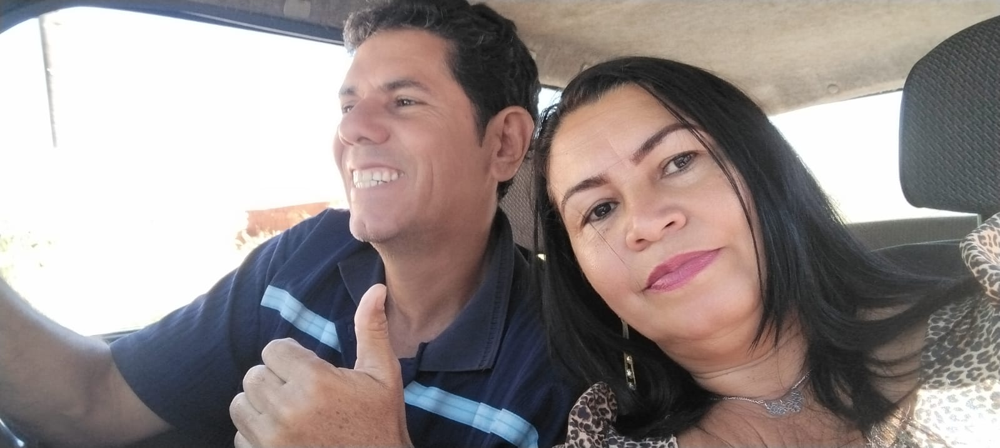

*** "No céu azul acima, nuvens brancas flutuam como testemunhas silenciosas do seu progresso. Elas se transformam, moldando-se em formas que refletem seus pensamentos e esperanças, lembrando-o de que o negócio é como uma nuvem em constante mudança, sempre presente e sempre evoluindo..." ***
UNIDOS Seguiremos...

Você Gostaria de realizar bons negócios, fazer pacerias vantajosas e duradouras?
Pensa em auto se desenvolver nos negócios?
Quer ver sua FAMILIA se desenvovendo em boas pacerias?
Seu setor, a educação, o comercio, etc e por fim, a cidade toda se desenvolvendo numa sintonia coletiva em paceria social armoníca?

* OBJETIVOS SOCIAIS
Em TODOS casos temos responsabilidades, mas sobretudo, nosso objetivo maior é equilíbrio, sustentação, saúde e desenvolvimento das instituições, setores, pessoas e todo ecosistema, portanto, somos e vivemos inteiramente em sociedade, pacíficos e integrados da luz, de paz e amor de DEUS!
Dessa forma, são direcionados os Negócios & Pacerias, onde todos ganham, e tudo, fica em equilíbrio e armonia.
Agora sim, Caiapônia vai tremer, vai mudar, vai se ajeitar... Dedicamos este espaço único e exclusivamente para PACERIAS & NEGÓCIOS,
NEGÓCIOS: é uma área da administração de empresas incumbida de executar o planejamento para alcançar objetivos organizacionais.
*negócio: pode ser definido de, quais produtos e serviços a organização pretende fornecer, para quais mercados e quais clientes.
Funções de um negócio, Questões como marketing, operações, gestão administrativa e financeira, recursos humanos e outros. E como gerar valor implica em ser relevante no mercado, lidar com a concorrência em busca por diferenciação, e oferecer algo de valor único, é fundamental.
PACERIAS: São acordos mutuamente benéficos entre duas ou mais partes, com responsabilidades partilhadas aos mais diversos níveis. proporcionam vantagens exclusivas e essenciais para pessoas, empresas, entidades e colaboradoras.
Conceitos de parcerias empresariais é o apoio em relação aos objetivos traçados, sejam eles coletivos ou individuais. Ou seja, para que exista uma relação de colaboração e parceria entre duas pessoas ou empresas, é necessário que uma auxilie a outra, de maneira previamente acordada, a atingir suas metas finais e vice-versa., ... ASSIM ...

FOMENTO
Naturalmente, juntos, vamos GERAR condições, empreender condições, atribuições, espaços e junções em fomentar instituições de todos portes e níveis, compreender nossos potenciais e mercados, Naturalmente, ofertar soluções adequadas.
*** Confira algumas vantagens de Pacerias em negócios:
=> O aumento na aquisição de novos clientes
=> A fidelização de consumidores já existentes
=> Acréscimo de receita
=> Expansão geográfica e de nicho
=> E junção de recursos para aprimoramentos e inovações.
Oportunidades de negócios em uma cidade que ainda não se desenvolveu pode ser uma abordagem empolgante e cheia de possibilidades.
** Desbravando Oportunidades: Negócios em uma Cidade em Crescimento **
DESAFIOS & OPORTUNIDADES
Nesta era contemporânea de globalização e urbanização, muitas cidades em todo o mundo estão passando por processos de desenvolvimento e crescimento. Em meio a esse cenário dinâmico, surgem oportunidades únicas para empreendedores visionários e investidores ousados. Este conteudo, explora as potenciais oportunidades de negócios em uma cidade que está no início de sua jornada de desenvolvimento, como Caiapônia por exemplo.
=> NEGÓCIOS/PARCERIAS
"Introdução de projeto" de viabilidade técnica para negocio ou paceria de iniciativa privada em caiapônia, também, cidades similares, nos padrões de Caiapônia, Acesse:
=> Introdução para Projeto de Viabilidade Técnica
=> NEGÓCIOS EM CPA - TODOS NEGÓCIOS - São postados AQUÍ
É Ó ESPAÇO EXCLUSVO de NEGÓCIOS/PACERIAS. Tem objetivo de FOMENTAR os Negócios e instituições em Caiapônia e enfátizar o desenvolvimento. * ACESSO A PAGÍNA DE NEGÓCIOS/PARCERIAS NO LINK ABAIXO
NEGÓCIOSQUERO ANÚNCIAR NA PÁGINA DE NEGÓCIOS/PARCERIAS